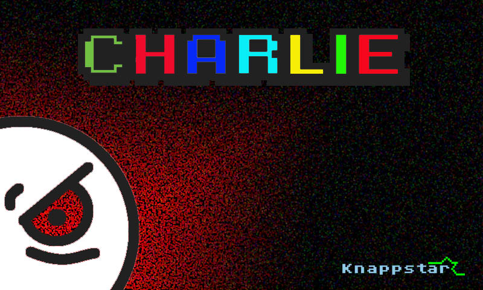

| |
-- Twitch Overlay App --
Release Date: Unreleased Custom App
Stream data overlay app for use with OBS. Display's stream data in real time.
|
|

| |
-- Charlie --
Release Date: "Coming when its done."
Charlie is a side scrolling action platformer game. His name is Charlie, and he's a man on a mission.... to avenge his girlfriend's untimely, undiginified death! You will control Charlie as he seeks his vengance against those who dared to kill his girlfriend.
Screenshots and teaser trailers soon to come.
Charlie Web App (Newer): Web App
|
|
| |
-- Vegan Warrior --
Release Date: "After we finish working on it."
His name is.... we don't know yet.. but he's a guy, and he's also a man on a mission.... However! He must fight for bacon-kind. Vegans are not welcome here. Bacon shall prevail. Play for bacon!
Vegan Warrior is a modded version of Charlie.
More details will follow shortly, as we move closer to completion. A teaser trailer will be released to the masses soon - so keep your eyes out on our YouTube, Facebook and Twitter channels.
Games will be available on: Microsoft's Xbox 360, Apple's iOS devices, PS Vita and Windows.
Vegan Warrior Test App: vw.zip
|